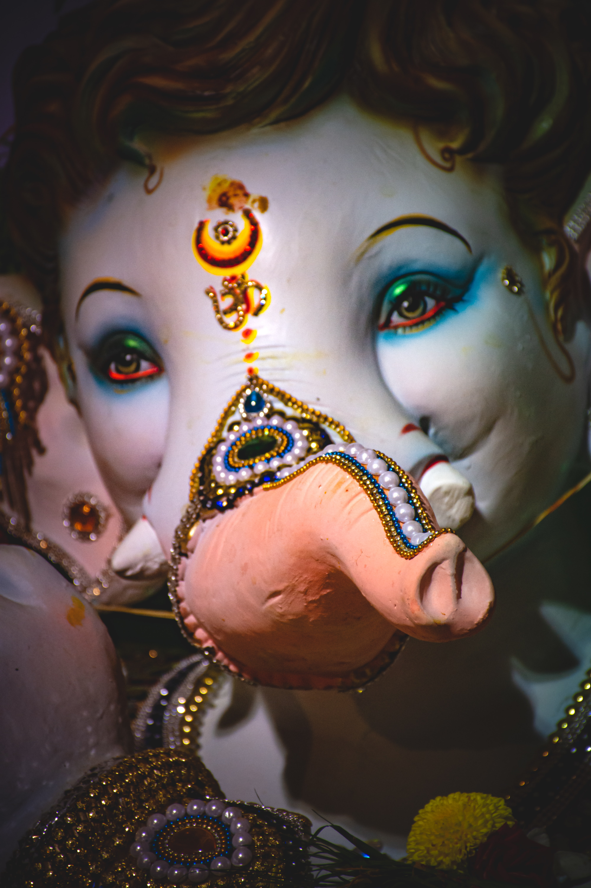
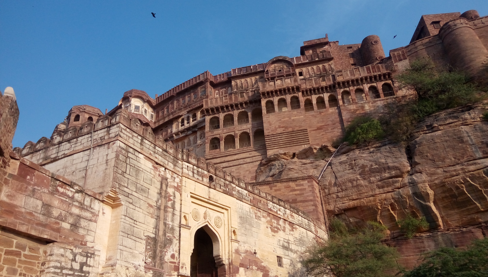

Top Engaging Hindi Movies
|
* OMG – Oh My God! *
|
2012 ‧ Comedy/Fantasy ‧ 2h 10m
When an earthquake destroys an atheist Kanji's antique shop, he decides to sue God.
However, when Lord Krishna helps him fight the lawsuit and expose the corrupt charlatans, his faith is restored.
Starring: Paresh Rawal, Akshay Kumar, Mithun Chakraborty
Director: Umesh Shukla
Producer: Ashvini Yardi, B.K. Modi, Vikram Malhotra
Writer: Umesh Shukla, Saumya Joshi, Bhavesh Mandalia
Wikipedia OMG – Oh My God!(film)
|
* Taare Zameen Par *

|
2007 ‧ Family/Drama ‧ 2h 45m
Ishaan is criticised by his parents for his poor academic performance and is sent away to a boarding school.
Ram, an art teacher, however, realises he has dyslexia and helps him uncover his potential.
Starring: Darsheel Safary, Aamir Khan, Tisca Chopra
Director: Aamir Khan
Writer: Amole Gupte
Producer: Aamir Khan
Wikipedia Taare Zameen Par(film)
|
|
* Aandhi *
|
1975 ‧ Political Drama ‧ 2h 13m
A hotel manager and a politician's daughter fall in love and get married. Due to certain differences,
they get separated. Years later, they meet again and decide to give their relation another chance.
Starring: Sanjeev Kumar, Suchitra Sen
Director: Gulzar
Writer: Kamleshwar
Producer: J. Om Prakash, Gulzar
Wikipedia Aandhi(film)
|
* Hera Pheri *

|
2000 ‧ Comedy ‧ 2h 23m
Hera Pheri is a series of Indian comedy films. The first film is directed by
Priyadarshan and produced by A.G. Nadiadwala, the second one was directed by Neeraj Vora while third
will be directed by Priyadarshan and produced by Firoz Nadiadwala.
Starring: Akshay Kumar, Sunil Shetty, Paresh Rawal, Tabu
Director: Priyadarshan
Writer: Anand Vardhan
Producer: A. G. Nadiadwala
Wikipedia Hera Pheri(film)
|
Suspense Thriller Mystery
* Drishyam *

|
2015 ‧ Thriller/Drama ‧ 2h 43m
When the disappearance of a policewoman's son threatens to ruin Vijay's family, he leaves no stone
unturned in order to shield his family.
Starring: Ajay Devgn, Shriya Saran, Tabu, Ishita Dutta, Mrunal Jadhav
Director: Nishikant Kamat
Writer: Jeethu Joseph
Producer: Kumar Mangat Pathak, Ajit Andhare, Abhishek Pathak
Wikipedia Drishyam(film)
|
|
* Karz *
|
1980 ‧ Thriller ‧ 2h 57m
Monty discovers the shocking truth about his past life when he was killed by his gold-
digger wife, while his family was rendered homeless. Supported by his lover, he decides to set things right.
Starring: Rishi Kapoor, Tina Munim, Simi Garewal, Raj Kiran, Pran, Pinchoo Kapoor, Mac Mohan
Director: Subhash Ghai
Writer: Dr. Rahi Masoom, Reza(dialogue)
Producer: Akhtar Farooqui, Jagjit Khurana
Wikipedia Karz(film)
|
* Qarib Qarib Singlle *

|
2017 ‧ Romance/Comedy ‧ 2h 5m
Two contrasting personalities, Yogi and Jaya, meet through a dating app and rediscover
themselves while they set out to revisit their past.
Starring: Irrfan Khan, Parvathy Thiruvothu
Director: Tanuja Chandra
Writer: Tanuja Chandra, Gazal Dhaliwal, Ramashrit Joshi
Producer: Zee Studios Sutapa Sikdar, Shailja Kejriwal, Ajay G. Rai
Wikipedia Qarib Qarib Singlle(film)
|
|
* Mughal-E-Azam *
|
1960 ‧ Drama/Romance ‧ 3h 18m
Salim, an emperor's son, falls in love with a beautiful courtesan. Even though he
is determined to be with her, his father decides to break them apart.
Starring: Prithviraj Kapoor, Dilip Kumar, Madhubala, Durga Khote
Director: K. Asif
Writer: Aman, Kamal Amrohi, K. Asif, Wajahat Mirza, Ehsan Rizvi
Producer: Shapoorji Pallonji
Wikipedia Mughal-E-Azam(film)
|
* Robot / Enthiran *

|
2010 ‧ Sci-fi/Action ‧ 3h 5m
Dr. Vasi, a brilliant scientist, builds Chitti, a unique robot, who is
programmed to protect mankind and also feel human emotions. Problems arise when
Chitti falls in love with Dr. Vasi's girlfriend.
Starring: Rajinikanth, Aishwarya Rai Bachchan, Danny Denzongpa
Director: S. Shankar
Writer: S. Shankar
Producer: Kalanithi Maran
Wikipedia Robot / Enthiran(film)
|
* Mission Mangal *

|
2019 ‧ Drama/Sci-fi ‧ 2h 10m
A group of scientists at ISRO battle in their personal and professional lives
and work tirelessly towards their only motive, the Mars Orbiter Mission.
Starring: Akshay Kumar, Vidya Balan, Sonakshi Sinha, Taapsee Pannu, Nithya Menen, Kirti Kulhari, Sharman Joshi
Director: Jagan Shakti
Writer: R. Balki, Jagan Shakti, Nidhi Singh Dharma, Saketh Kondiparthi
Producer: Cape of Good Films, Hope Productions, Fox Star Studios, Aruna Bhatia, Anil Naidu
Wikipedia Mission Mangal(film)
|
|
* Bal Ganesh *

|
2007 ‧ Animation ‧ 1h 46m
Bal Ganesh, the mischievous son of Lord Shiva, embarks on several adventures with Mooshak the mouse, his friend
and vehicle. Despite being young, he battles evil forces and protects the world.
Starring: Ashar Shaikh
Director: Pankaj Sharma
Producer: Smita Maroo, Pankaj Sharma
Wikipedia Bal Ganesh(film)
|
|
* Manikarnika
: The Queen of Jhansi *

|
2019 ‧ Action/History ‧ 2h 28m
Manikarnika, the wife of the king of Jhansi, refuses to bow down when the East India
Company tries to annex the kingdom. Her rebellion soon turns into a fiery revolution
against the British Raj.
Starring: Kangana Ranaut, Atul Kulkarni, Jisshu Sengupta, Vaibhav Tatwawaadi, Mohammed Zeeshan Ayyub, Ankita Lokhande
Director: Kangana Ranaut, Radha Krishna, Jagarlamudi
Producer: Zee Studios, Kamal Jain, Nishant Pitti
Writer: Prasoon Joshi
Wikipedia Manikarnika
: The Queen of Jhansi(film)
|
* Raaz *

|
2002 ‧ Horror/Romance ‧ 2h 32m
Sanjana and Aditya go to Ooty for a holiday to save their unsteady marriage.
However, Sanjana is haunted by a spirit who reveals some dark secrets about Aditya and his past.
Starring: Bipasha Basu, Dino Morea, Malini Sharma, Ashutosh Rana
Director: Vikram Bhatt
Writer: Mahesh Bhatt, Girish Dhamija
Wikipedia Raaz(film)
|
|
* Bhoot *
|
2003 ‧ Horror/Thriller ‧ 1h 59m
Swati and Vishal move into a new flat that is haunted by the spirit of its previous tenant.
After a while, Vishal notices that Swati has started behaving in a strange manner.
Starring: Urmila Matondkar, Ajay Devgn, Fardeen Khan, Rekha, Nana Patekar, Seema Biswas, Victor Banerjee
Director: Ram Gopal Varma
Writer: Ram Gopal Varma
Wikipedia Bhoot(film)
|
 Fantasy
Fantasy Drama
Drama Suspense Thriller Mystery
Suspense Thriller Mystery Animation
Animation Historical
Historical